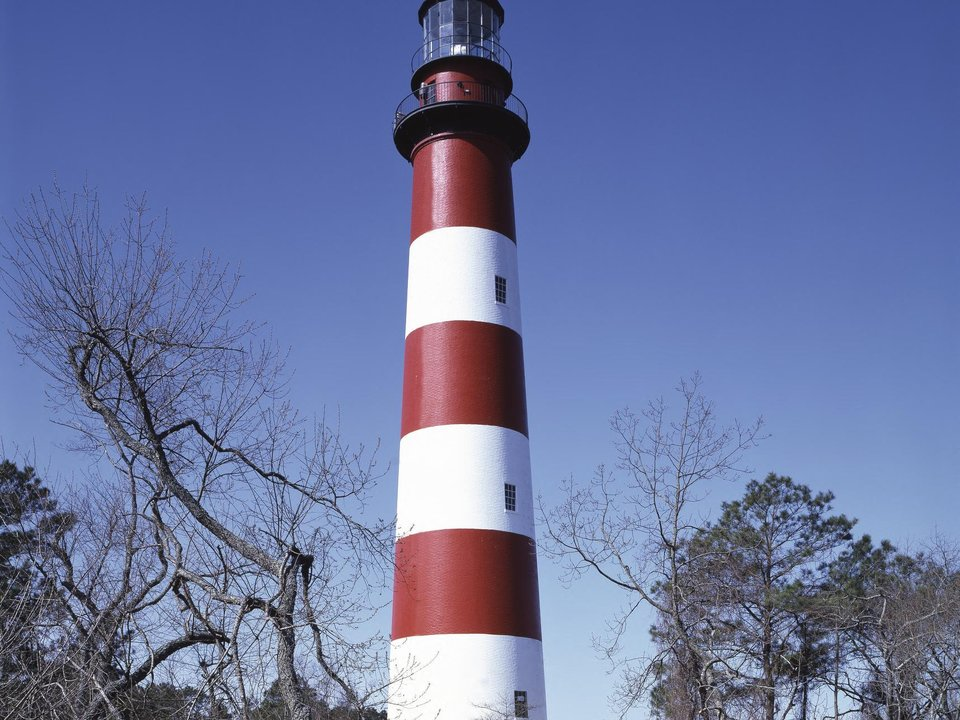

Island · B&B
Miss Molly’s Inn
A Victorian B&B in the village, where “Misty of Chincoteague” was written.
Official details for Miss Molly’s InnWild ponies and empty beaches.
Chincoteague is a small fishing town on Virginia’s Eastern Shore, the gateway to Assateague Island, where wild ponies graze in the marshes. Land at Accomack County, drive half an hour to the island, stay at a B&B or a waterfront inn, bike the Chincoteague National Wildlife Refuge to the red-and-white Assateague Lighthouse, swim at the national seashore beach, and come in late July for the pony swim.

Time illustration: direct distance at 150 KTAS plus 15 minutes for departure and arrival, matching the discovery page. Use ForeFlight for your actual flight plan.
KMFV, Accomack County, is a non-towered county airport at 48 feet with a 5,000-foot runway in Melfa, about 30 minutes from Chincoteague.
Accomack County Airport, Melfa, VA
NASA Wallops Flight Facility and its restricted airspace (R-6604) are between the airport and Chincoteague; check the status and stay clear. Arrange a rental car ahead. No live fuel price is shown.
Mid-Atlantic flying: summer haze and afternoon thunderstorms, morning fog near the water, busy military and airline airspace around Norfolk and Washington, and winter icing. About 280 nm from Myrtle Beach.
Rates and availability need travel dates. Pony swim week books a year ahead.
A Victorian B&B in the village, where “Misty of Chincoteague” was written.
Official details for Miss Molly’s InnRooms with balconies on Chincoteague Channel.
Official details for Waterside InnA waterfront hotel on the island.
Official details for Island ResortInns, cottages and rentals.
Chincoteague Chamber for More places to stayPrices and availability for your dates, through our partner Stay22. This is an affiliate link: we may earn a commission at no cost to you. The picks above are never paid.
Reserve weekend dinners.
Local seafood on the water from a family in the business for decades.
Official details for The Village RestaurantHomemade ice cream, an island tradition.
Official details for Island CreameryOysters, crab and seafood shacks.
Chincoteague Chamber for More restaurantsBring bug spray from May to September.
Ponies, birds, trails and the Assateague Lighthouse.
U.S. Fish & Wildlife ServiceThis prototype links to the local visitor site. It does not yet match events to your travel dates.
The ponies swim the channel to Chincoteague.
Chincoteague Chamber for Pony SwimChincoteague salts at their best.
Chincoteague Chamber for Oyster seasonSnow geese and shorebirds.
U.S. Fish & Wildlife Service for Bird migrationCheck the local calendar when choosing a weekend, and confirm dates and tickets with the organizer.
A sample Chincoteague weekend. No bookings or availability confirmed.
Land at KMFV mid-morning.
Seafood on the island.
A short walk, then back to the airport.
Land at KMFV, subject to weather and your actual flight plan.
Drive to the island and walk the waterfront.
Dinner at The Village Restaurant.
Bike the refuge to the lighthouse.
Beach at Assateague.
Ice cream at Island Creamery.
Look for ponies at dawn.
Check the Wallops restricted area status before departure.
Afternoon thunderstorms are common in summer; leave in the morning.
Bike the wildlife refuge.
Explore.
Dinner in town.
This guide is part of a multi-stop flying trip. Set your dates and aircraft, then swap stops to make it your own.
These details make the difference between an appealing list and a usable getaway.
Lodging, then a rental car.
About 285 nm from Myrtle Beach.
Stay clear of Wallops restricted airspace.
May to October.
Picks and links reviewed by WingAway Weekends. Hours, prices, menus and availability change often, so confirm directly with each place before booking. Spotted something out of date, or have a favorite we missed? Email us at hello@wingawayweekends.com.
WingAway Weekends helps you discover the destination. Use ForeFlight and current official aviation information for route, performance, weather, NOTAMs and preflight decisions. Flight planning and PIC responsibility stay with the pilot.